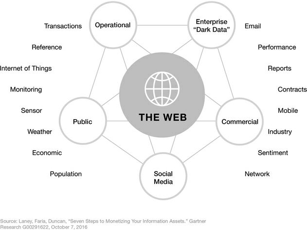

The bibliographical reference (1) describing a book (2)
Data, a concept with multiple layers
2017-31-07
last modified: 2022-12-16
== !
1. Definition of data
The English term "data" (1654) originates from "datum", a Latin word for "a given". "Data" is a single factual, a single entity, a single point of matter.
The word "data" to mean "transmittable and storable computer information" was first used in this sense in 1946. The expression "data processing" was first used in 1954.
Tip | Thoughts: the etymology suggests that data is "a given". Can you question this? |
Data represents either a single entity, or a collection of such entities ("data points"). We can speak also of datasets instead of data (so a dataset is a collection of data points).
2. The variety of datasets
A date | A color | A grade |
A relation of friendship | A sound | A heartbeat |
A user input | A duration | A curriculum vitae |
A picture | A longitude and latitude | A price |
A number of friends | A temperature | A list of favorite movies |
etc… | etc… | etc… |
These examples are chosen on purpose to be varied and from unexpected places. They illustrate three principles:
a. Think about data in a broad sense
Data is not just numerical, neither is it "what sits in my spreadsheets". You should train in thinking about data in a broader sense:
pictures are data
language is data (including slang, lip movements, etc.)
relations are data: individual A is known, individual B is known, but the relationship between A and B is data as well
preferences, emotional states… are data
etc. There is no definitive list, you should train yourself looking at business situations and think: "where is the data?"
b. metadata is data, too
Metadata is a piece of data describing another data.
Example:
the metadata
the data
Data without metadata can be worthless (imagine a library without a library catalogue)
Metadata can be informative in its own right, as shown with the NSA scandal (read this article from the New Yorker about NSA and metadata).

Figure 1. The trouble with metadata
c. zoom in, zoom out
We should remember considering that a data point can be itself a collection of data points:
a person walking into a building is a data point.
however this person is itself a collection of data points: location data + network relations + subscriber status to services + etc.
It is a good reflex to wonder whether a data point can in fact be "unbundled" (spread into smaller data points / measurements)
d. Take away: to create value from data, you must first be able to identify what data is, and where it is.
Organizations that don’t know what information they have or could acquire, are unable to leverage it as an asset. As one CIO for a large insurance company recently admitted to me: "It’s silly that someone around here has an inventory of our office furniture, but nobody in the company has an inventory of what data we have."
Infonomics: How to Monetize
— Douglas Laney
— Douglas Laney
Where is data located? An inventory must be made. From Douglas Laney’s Infonomics:

Figure 2. Information Asset Inventory
As highlighted in the quote above, not many companies put in place a "data management" to make sure data is known, listed of good quality and actionable. An interesting positive exception: Uber has put in place a "databook" storing the metadata about the datasets in the company:

Figure 3. Databook by Uber: making medatada searchable and usable
Employees can search this database to discover and access the data they need.
Another very important side effect of the databook is that it makes very clear and visible who is the "owner" of a given dataset. Defining data ownership an important cogwheel in the data governance of a firm.
(a detailed blog post about Uber’s databook is available here)
3. How to describe datasets
a. Formats, types, encoding

This is a digital medium (because it’s on screen as opposed to analogical, if we had printed the pic on paper)
The type of the data is textual + image
The text is formatted in plain text (meaning, no special formatting), as opposed to data-interchange formats which are formatting marks added to the text to facilitate its readability by software (check csv, json and xml).
The encoding of the text is UTF-8 (one of encodings deriving from the Unicode standard). Encoding deals with the issue: how to represent alphabets, signs (for instance: emojis) and symbols, from different languages, in text? UTF-8 is an encoding which is one of the most universal.
The tweet is part of a list of tweets. The list represents the data structure of the dataset, it is the way the data is organized. There are many alternative data structures: arrays, sets, dics, maps…
The tweet is stored as a picture (png file) on the hard disk. "png" is the file format. The data is persisted as a file on disk (could have been stored in a database instead).
b. Tabular data
Tabular data is a common way to handle datasets, by organizing it in lines and columns:

Figure 4. tabular data
c. First party, second party and third party data
First party data: the data generated through the activities of your own organization. Your organization controls it, which does not mean that consent from users is not required, when it comes to personal data.
Second party data : the data acquired from a partner, which generated and controls this data. The partner makes these data available to you through an agreement (paying or not).
Third party data: the data acquired from a reseller. This data is acquired through a market transaction.
d. Sociodemo data vs behavior data
Sociodemogaphic or sociodemo data refers to information about individuals, describing fundamental attributes of their social identity: age, gender, place of residence, occupation, marital status and number of kids.
Behavior data refers to any digital trace left by the individual in the course of it life: clicks on web pages, likes on Facebook, purchase transactions, comments posted on Tripadvisor…
Sociodemo data is typically well structured or easy to structure. It has a long history of collection and analysis, basically since census exists. Behavior data allows to profile individuals much more precisely than sociodemo data alone could do: individuals can be characterized by their acts and tastes, well beyond what an age or marital status could define.
How can behavior data "beat" sociodemo data for precision? It is hard to predict with great accuracy the political, religious or sexual orientation of a given individual just based on their zip code, gender and age. A research team could evaluate these personal attributes with great precision based on the likes individuals make on Facebook pages and posts. Political orientation (85% accuracy), sexual orientation (75% to 88% accuracy) and religious orientation (82% accuracy) can be determined for persons who had made 170 likes on average.
But behavior data is typically not well structured, which makes it more costly to collect, in term of technological solution, than it costs to collect sociodemo data. The power and accuracy of prediction that behavior data affords also means that individuals should be protected against the possible invasion of their privacy. There are large differences between countries regarding the legal frameworks protecting individuals rights. We discuss this in the chapter on data privacy and the GDPR.
4. Data and size

Figure 5. Volumes of data
1 bit | can store a binary value (yes / no, true / false…) | |
8 bits | 1 byte (or octet) | can store a single character |
~ 1,000 bytes | 1 kilobyte (kb) | Can store a paragraph of text |
~ 1 million bytes | 1 megabyte (Mb) | Can store a low res picture. |
~ 1 billion bytes | 1 gigabyte (Gb) | Can store a movie |
~ 1 trillion bytes | 1 terabyte (Tb) | Can store 1,000 movies. Size of commercial hard drives in 2017 is 2 Tb. |
~ 1,000 trillion bytes | 1 petabyte (Pb) | 20 Pb = Google Maps in 2013 |
To go further
Data is never raw (🕒 10 min read).
Data Alone Isn’t Ground Truth (🕒 6 min read).
The end
Find references for this lesson, and other lessons, here.

This course is made by Clement Levallois.
Discover my other courses in data / tech for business: https://www.clementlevallois.net